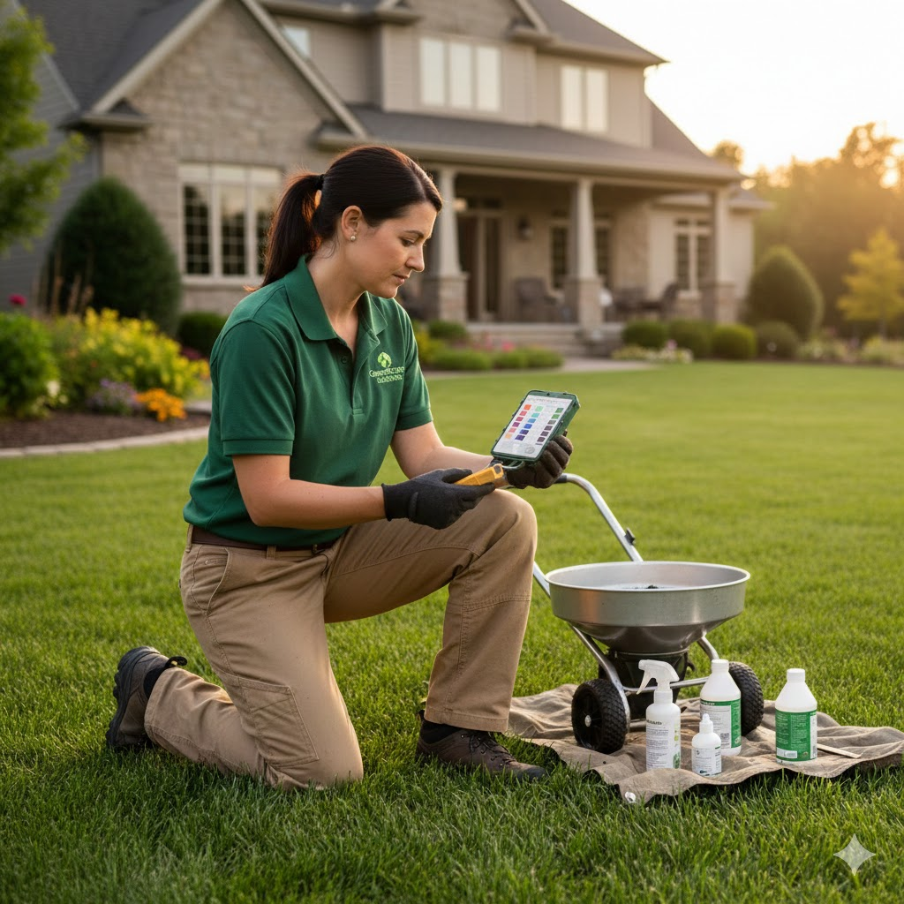

Isadore Bell is a living history of GreenScape Solutions, having served the Central Ohio community for close to 30 years. His nearly three decades of service make him one of the most experienced and trusted members of our team, with an encyclopedic knowledge of what it takes to maintain a flawless landscape year-round. Isadore specializes in lawn care maintenance, bringing a deep, consistent standard of excellence to every property he oversees. His routine maintenance programs go beyond simple mowing; they are meticulously planned schedules covering essential tasks like aeration, dethatching, seasonal clean-ups, and precise trimming to ensure every lawn and garden bed remains healthy, clean, and immaculately presented throughout the changing seasons. What truly sets Isadore apart is his expertise in grass and plant climatology. Having worked in Central Ohio for so long, he possesses an unparalleled understanding of how local weather patterns, microclimates, and extreme temperature shifts impact specific grass types and plant health. Isadore uses this deep knowledge to anticipate problems before they arise, adjusting watering schedules, modifying soil treatments, and preparing landscapes for everything from summer droughts to harsh winter freezes. His ability to fuse decades of hands-on maintenance experience with advanced climatological insight ensures that the landscapes he manages are not only beautiful today, but resilient and sustainable for years to come.

Chris P. Bacon has been an indispensable part of GreenScape Solutions for over 20 years, serving as our authority on lawn terraforming and soil science. His tenure with the company is a testament to his expertise in building landscapes from the ground up—literally. Chris understands that the foundation of a truly healthy and sustainable lawn lies beneath the surface. He specializes in assessing and manipulating the soil structure, drainage, and composition of a property. This includes complex projects such as correcting severe grading issues, improving water runoff, and creating custom soil blends to ensure optimal conditions for turf growth. His work in terraforming is essential for clients who need radical changes to their property's topography or functionality. As an expert in soil science, Chris's process begins with a meticulous analysis of the existing environment, using scientific rigor to diagnose nutrient deficiencies, pH imbalances, and compaction problems. He doesn't just treat the symptoms; he addresses the root cause, implementing sustainable solutions that foster deep, resilient turf and vibrant plant life. Whether he's preparing a site for a new construction or rehabilitating an aged, struggling lawn, Chris P. Bacon's two decades of specialized knowledge guarantee that the ground underfoot is perfectly prepared to support a thriving, long-lasting GreenScape Solutions masterpiece.